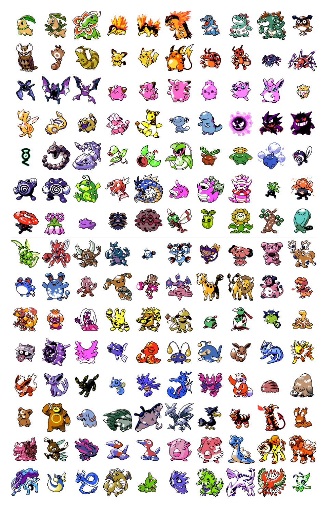

- Home
- ›
- Portifolio
- ›
- Pokédex
Pokedéx
Descrição do Projeto
Neste projeto apliquei meus conhecimentos para criar uma pokedéx, que recebe uma API de pokemons, com uma animação para cada pokemon. Permite que o usuário pesquise o pokemon desejado pelo nome ou pelo seu código númerio único, o usuário pode também avançar e retroceder para uma melhor visualização.
Pokemons
Está API é muito conhecida pelos desenvolvedores por ser ampla e fornecer uma variedade de pokemos do Tipo Normal: Fire (fogo), Water (água), Grass (grama), Flying (voador), Fighting (lutador), Fighting (lutador), Poison (veneno), Electric (elétrico), Tipos Lendários, etc. Que dão uma vastidão e qualidade muito boa para nosso projeto.
compatibilidade
Este projeto é totalmente compativel com celulares, tablets e computadores.
Link para o projeto
PokédexTécnologias Usadas

←Voltar ao portifolio